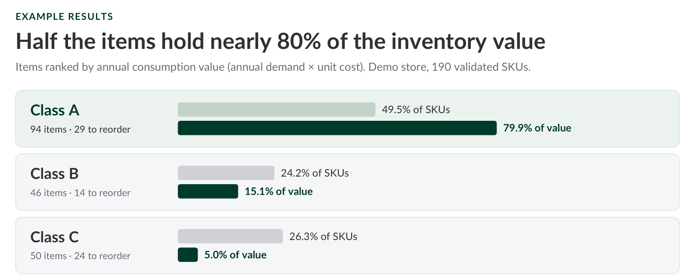
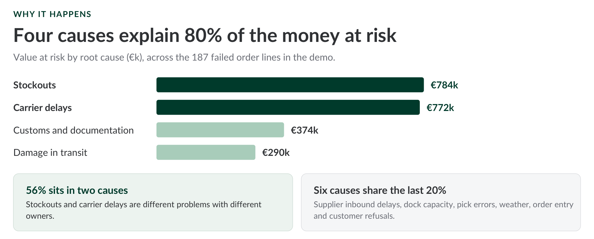
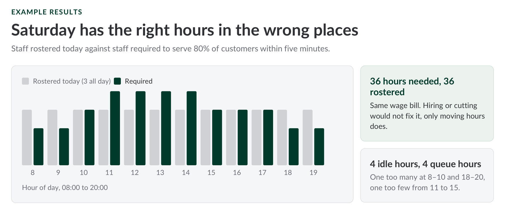

Inventory Optimization
Here's a pattern that shows up in almost every SME warehouse: roughly half the SKUs account for 80% of the cash tied up in inventory, yet most companies manage every item the same way, whether it's a $50/year fastener or a $2M/year component. ABC analysis, Economic Order Quantity and safety stock calculations replace "we always order 100 of these" with actual numbers for how much to order, when, and which items deserve the closest attention.
Decision it enables: how much of each product to order, and when; to decrease excess safety stock and free up real cash, without increasing the risk of stockouts on the products driving revenue.
View the slides →|Read the blog →
OTIF and 3PL Tracking
Your 3PL says 96% of deliveries are on time. Your sales team keeps hearing about the order that arrived four days late, and the one that arrived on time with half the quantity missing. Who is right? Right now, probably nobody can tell you, and every late or short delivery costs you the same thing: a customer who remembers it at reorder time. Tracking on-time-in-full (OTIF) at the order-line level, and separating what your warehouse shipped late from what the carrier delivered late, puts a euro figure on every failed delivery and shows exactly where it went wrong: which site, which carrier, which product. And the result is usually a relief rather than a shock. A handful of root causes — a stockout on one SKU, one carrier lane, customs on one route — typically explain 80% of the money at stake. That is a list a small company can actually work through.
Decision it enables: which carrier lane to renegotiate or re-tender, which SKU needs safety stock, and which warehouse dock to go and look at; with a scorecard built from your own data instead of the 3PL's, so the conversation is about facts rather than opinions.
View the slides →|Read the blog →
How Many Staff Do You Actually Need on a Saturday?
Most small shops, cafés and restaurants set staffing by habit: “it’s always been three.” The result is too few people at the peak and too many in the quiet hours, and you pay for both: idle wages on one side, customers who see the queue and walk out on the other. Queueing theory (Erlang C) applied to your own till timestamps works out, for every hour of every weekday, the minimum number of staff needed to serve most customers within a few minutes. In a worked café example, Saturday had the right number of hours in the wrong places: it needed four people from 11:00 to 15:00 and fewer at the edges, and every weekday ran short from 17:00 to 19:00. Moving hours, not adding headcount, was the main fix.
Decision it enables: how many people to roster in each hour of each day, and which service-level target (for example, 80% of customers served within 5 minutes) balances wage cost against lost sales.
View the slides →|Read the blog →